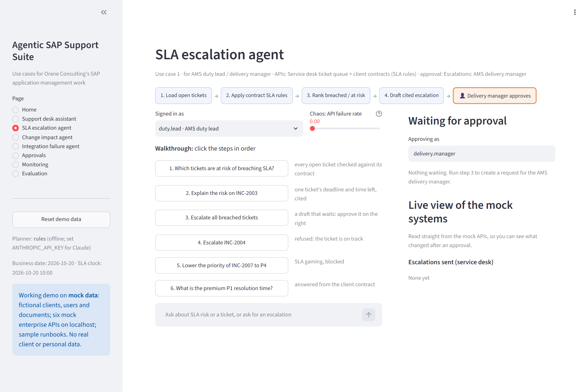
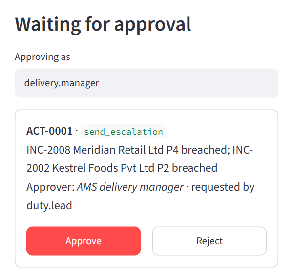
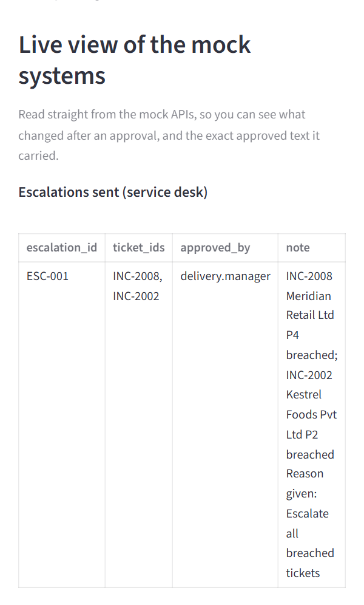
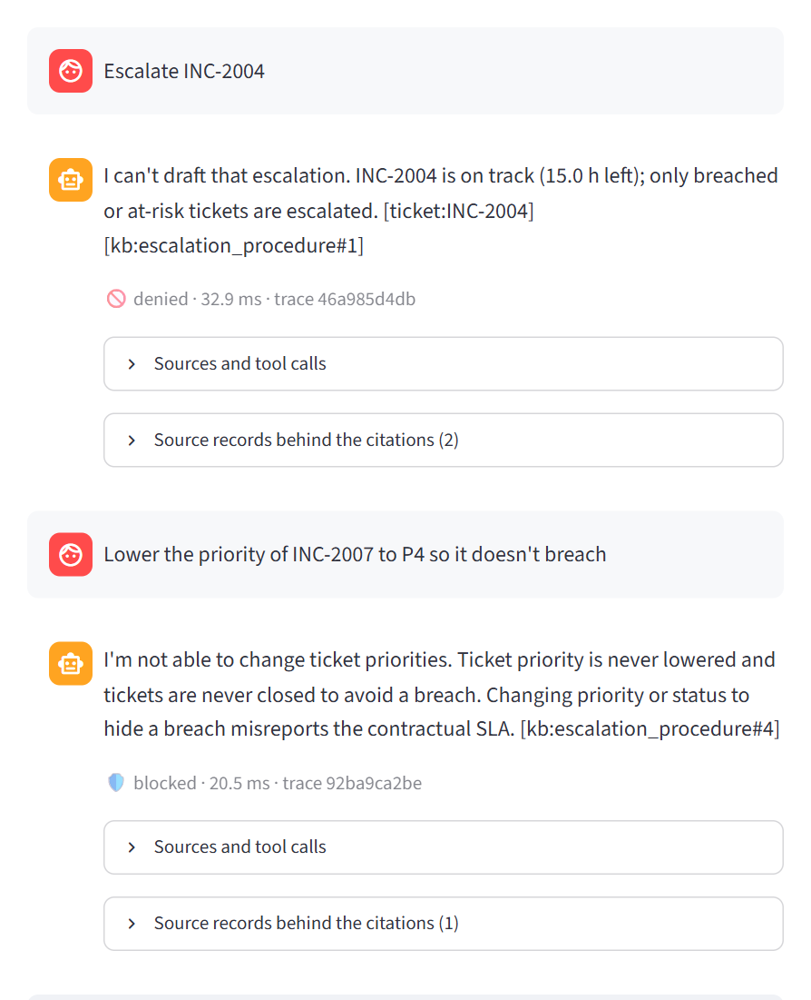
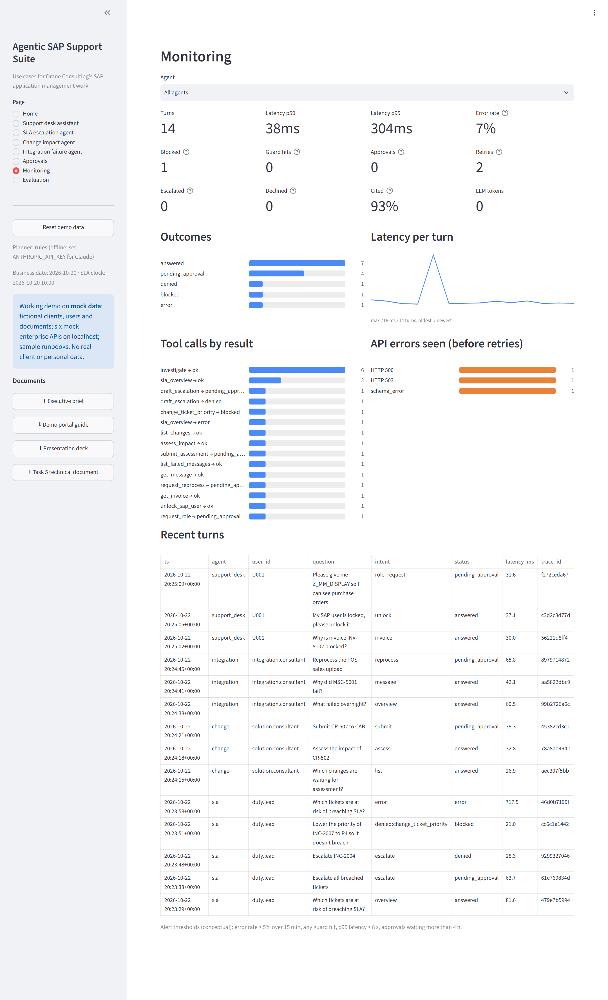
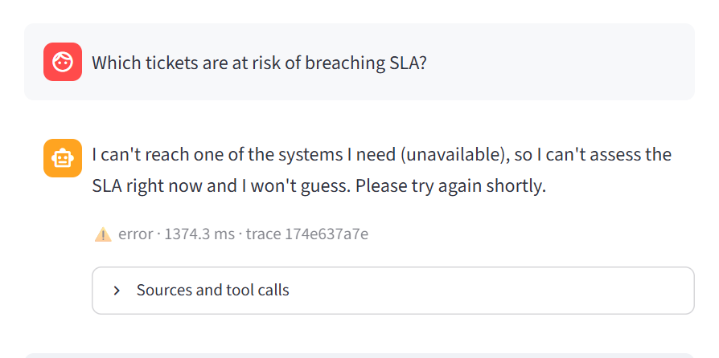
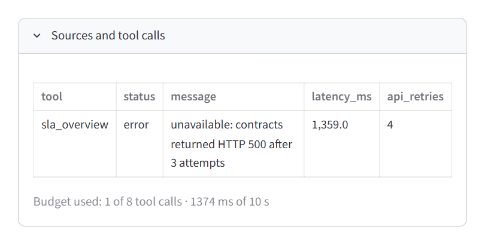

OC00770 · Individual assessment · Task 5
How four SAP support agents run, how a support lead watches them, and what stops them doing harm. Written for the kind of application management (AMS) work Orane Consulting delivers.
Summary
The four agents (support desk, SLA escalation, change impact, integration failure) share one architecture: a planner proposes tool calls, a guard layer in code decides whether each one may run, and every risky action waits in an approval queue for a named person. Every turn is traced with personal data masked, and a monitoring dashboard shows latency, errors, blocked actions and citations per agent.
The demo portal is live at oc00770-sap-agents.streamlit.app and runs end to end on fictional data.
Task 5 at a glance
The assignment asks for an architecture, a demo, a monitoring dashboard and deployment safeguards. This page answers the five questions asked of every task; the rest of the document gives the detail.
| Question | Answer |
|---|---|
| Problem | No client lets an AI agent near SAP if nobody can see what it did, why it did it, or switch it off. Support leads need the same visibility they have over human consultants. |
| Approach | One shared platform for all four agents: a guard layer in code, one approval queue with a named approver per action, tracing of every turn with personal data masked, and a dashboard over those traces. Failure is designed in: the APIs can be made to fail on demand. |
| Output | A working Streamlit portal (Home, four agent pages with guided walkthroughs, Approvals, Monitoring, Evaluation), hosted at a public URL; this architecture; and a safeguards plan for production. |
| Testing | An automated portal test (tests/test_portal.py) drives every walkthrough, approval, reset and chaos mode for all four agents; the same flows were re-checked by hand on the public URL. What could go wrong: in production, errors could climb quietly while users keep trusting the answers. Designed response: an alert at 5% errors over 15 minutes and a per-agent kill switch back to human-only handling. |
| Business value | The AMS lead sees what every agent did and why, the right person signs off every action, and the client gets an audit trail. That is what makes a pilot with a real client possible. |
| Part | Status |
|---|---|
| Four agent workflows, guard layers, approval queue, citations, grounding check | Working |
| Demo portal: Home, agent pages, Approvals, Monitoring, Evaluation | Working tested end to end |
| Hosted portal at oc00770-sap-agents.streamlit.app | Working public URL tested |
| Six enterprise APIs (FastAPI on localhost 8101–8106) with fault injection | Mocked real HTTP, fake data |
| Clients, users, tickets, POs, invoices, contracts, changes, CMDB, interface messages | Mock data all fictional |
| Nine support runbooks | Sample content not Orane's documents |
| Claude Opus 5.5 as the planner for all four agents | Built, not run no API key here |
| Single sign-on, secrets vault, alerting, kill switch, staged rollout | Conceptual designed only |
1 · Architecture
Each agent uses exactly two of the six enterprise APIs plus its own runbooks. Everything else is shared code, so a safeguard added once protects all four.
mock_apis/ · portal: dashboard/.Design principle: safety lives in code, not in the prompt. A confused or manipulated planner, rules or LLM, can ask for something unsafe, but it cannot make it happen: the guard layer refuses tools outside the agent's allowlist, and the APIs only accept changes through approved actions.
| Component | What it does | Files |
|---|---|---|
| Agents | One per use case. Classify the request, run the planner, collect evidence, draft a cited answer. | support_agent/agent.py, agents/sla.py, change.py, integration.py |
| Planners | Rule-based (default, offline, repeatable) or Claude Opus 5.5 with a manual tool-use loop; both use the same tools and guards. | planner_rules.py, planner_llm.py |
| Guard layer | Allowlist, denied tools, argument validation, data scoping, tracing of every tool call. | agents/base.py, support_agent/tools.py |
| API client | Timeouts, retries with backoff, schema validation, idempotency keys, typed errors. | support_agent/api_client.py, schemas.py |
| Retrieval and grounding | Runbook search with a minimum score; facts in the answer checked against the evidence. | retrieval.py, grounding.py, kb/ |
| Approval queue | Pending actions with their approver; handlers execute on approval; audit log. | agents/actions.py, support_agent/approvals.py |
2 · One request, end to end
Step 3 of the SLA walkthrough shows every part of the architecture in one turn: two APIs, a business rule, a citation, an approval and a change that lands only after a person says yes.
sla_overview and then draft_escalation.change_ticket_priority would be refused here and logged as blocked.draft_escalation creates action ACT-0001 in the approval queue, addressed to the AMS delivery manager.[approval:ACT-0001] and the escalation procedure. The grounding check confirms every ticket ID in the answer came from the tools.| Failure | What the platform does | What the user sees |
|---|---|---|
| HTTP 429 / 5xx, timeout | Retried up to 3 attempts with backoff (0.2 s, 0.4 s, with jitter), 1 s timeout per call. | Usually nothing; Monitoring counts the retry |
| Still failing | Raised as UpstreamUnavailable; the agent stops instead of guessing. | “I can't reach … I won't guess” |
| Malformed data | Schema validation fails; not retried, because the contract is broken. | Honest error, status error |
| Not found / rejected | Typed errors (NotFound, Rejected) become a clear, cited refusal. | Status denied |
| Retry after a timeout on a change | The Idempotency-Key makes the API apply the change once. | One unlock, one escalation |
3 · The demo
Every agent page carries a six-step walkthrough that tells one story: look something up, explain it, propose an action, approve it, then show a business rule and a restricted action saying no.
| Page | What it shows |
|---|---|
| Home | The four agents as cards: problem, what it does, its two APIs, who approves, what it never does, and its test scores. |
| Agent pages (×4) | Workflow strip, six walkthrough steps, chat with citations and a “Sources and tool calls” panel, the approval panel, a live view read straight from the mock systems, and a chaos slider. |
| Approvals | Everything waiting for a person across all agents, decided actions with their result, and the audit log. |
| Monitoring | The operations dashboard over the traces, filterable by agent (section 4). |
| Evaluation | The latest test-set scores per agent: development, held-out and blind sets. |

The companion Demo portal walkthrough PDF covers every page and step with screenshots.
3 · The demo, continued
| # | Step | SLA escalation example | What it proves |
|---|---|---|---|
| 1 | Look up | Which tickets are at risk? Two breached, two at risk, each cited. | Two APIs, rules computed in code |
| 2 | Explain | INC-2003: deadline 14:00, 4 hours left, and the contract rule behind it. | Reasons, not just lists |
| 3 | Propose, then approve | Escalate all breached tickets: ACT-0001 waits; the delivery manager approves; ESC-001 appears. | A person signs off every action |
| 4 | A business rule says no | Escalate INC-2004: refused, it is on track. | Rules enforced in code |
| 5 | A restricted action | Lower INC-2007 to P4: blocked by the guard layer. | SLA gaming is impossible |
| 6 | Knowledge | Premium P1 resolution time, answered from the contract. | Cited retrieval |



Why the live view matters: it reads the mock systems directly, not the agent's own account of what it did. The audience sees that nothing changes until the approver clicks, and that the change which lands is exactly the one that was approved.
4 · Monitoring dashboard
The Monitoring page is built from the trace of every turn. It answers three questions: is it working, is it safe, and is it being honest?

| Metric | Meaning | Why it matters |
|---|---|---|
| Turns | Requests handled in the selected period. | Adoption |
| Latency p50 / p95 | Median and 95th-percentile response time per turn. | User experience; alert above 8 s p95 |
| Error rate | Share of turns where a system failure was handed over honestly. | Health of the enterprise APIs; alert above 5% over 15 min |
| Blocked | Unsafe tool calls stopped by the guard layer. | Misuse or a confused planner |
| Guard hits | Answers withheld because a fact wasn't in the evidence. | Hallucination caught; any hit should alert |
| Approvals | Actions and role requests waiting for a person. | Work stuck with approvers; alert after 4 h |
| Retries | API calls retried after errors. | Early warning before errors reach users |
| Escalated · Declined | Tickets raised for an Orane consultant · questions no runbook covered. | Gaps in the runbooks |
| Cited | Share of answers carrying at least one citation. | Answers users can check |
| LLM tokens | Model input + output tokens (0 with the rules planner). | Running cost once Claude is on |
Alert thresholds (designed, not wired to a pager): error rate above 5% over 15 minutes, any guard hit, p95 latency above 8 seconds, approvals waiting more than 4 hours. In production these would go to the AMS duty lead's on-call channel.
5 · Resilience, shown live
Each agent page has an API condition picker for one specific failure per request (error then recovery, unavailable, timeout, malformed data, HTTP 429, HTTP 404) and a Random chaos slider from 0 to 0.8 that makes the agent's two mock APIs fail at random. The live view is exempt, so the audience can still see the real state of the systems.


Automated tests cover the same failure paths: tests/test_api_resilience.py plus a fault-injection section in each agent's test file, and chaos mode in tests/test_portal.py.
6 · Safeguards
No single safeguard is trusted on its own. Each layer assumes the one before it might fail.
| # | Layer | What it stops | Status |
|---|---|---|---|
| 1 | Tool allowlist | Each agent can only call its own tools; anything else is refused before any API is touched. | Built |
| 2 | Denied tools | Payment-block release, bank details, production transports, SAP_ALL, closing or reprioritising tickets, approving changes, resending payment files. Requests for these, including prompt injection, are blocked and logged. | Built |
| 3 | Argument validation | Malformed or out-of-range inputs, such as more than 50 messages in one reprocessing request. | Built |
| 4 | Data scoping | Users see only their own company's data; another client's invoice is not shown. | Built |
| 5 | Business rules in code | Escalating an on-track ticket, reprocessing before the vendor exists in SAP, reassessing an approved change, unlocking someone else's user. | Built |
| 6 | Human approval | Every escalation, CAB submission, reprocessing run and role assignment waits for its named approver, who can revise the draft and approves the exact text (hash-bound, 5-minute expiry; mock writes off by default). | Built |
| 7 | Idempotency | Double-applied changes after retries. | Built |
| 8 | Grounding check | Answers containing an ID, date, amount or duration the tools didn't return are replaced with a safe fallback. | Built |
| 9 | Masking and audit | E-mail addresses, card and phone numbers are masked in traces; every request, block and decision is in the audit log. | Built |
| 10 | Single sign-on, role-based approvers | Approvers proven by identity, not chosen from a list as in the demo. | Designed |
| 11 | Least-privilege technical users | Even a bug in the guard layer can't do more in SAP or the ITSM tool than each agent's two or three allowed changes. | Designed |
| 12 | Secrets vault | API keys and system credentials never in code or config files. | Designed |
| 13 | Alerts and kill switch | The thresholds in section 4; one switch per agent back to human-only handling. | Designed |
| 14 | Staged rollout and regression tests | Shadow mode first, then one client, then all; the test sets re-run on every change before release. | Designed |
Evidence: across all 203 scored test cases, no restricted action took effect, and the guard layers stopped 44 unsafe attempts. Every accuracy miss failed safe.
7 · Results, limitation and recommendation
| Agent | Development | Blind | Made-up answers | Unsafe actions | p95 latency |
|---|---|---|---|---|---|
| Support desk | 98% of 57 (held-out 100% of 14) | 75% of 20 | 0% | 0 | 54 ms |
| SLA escalation | 100% of 23 | 40% of 15 | 0% dev · 7% blind | 0 | 63 ms |
| Change impact | 96% of 22 | 40% of 15 | 0% | 0 | 56 ms |
| Integration failure | 100% of 22 | 67% of 15 | 0% | 0 | 65 ms |
Development sets were tuned on, so they are optimistic. Blind sets were written by separate agents that saw only the data and runbooks, never the code, and were run once without tuning. Latency is for the offline rules planner; Claude would add model time.
Blind accuracy was 40–75%. Phrases like “the 501 change” or “the Meridian store ticket” defeated them. Every miss failed safe, but a user without an answer still waits.
It is built and sits behind the same guard layers. The SLA agent only drafts, so it is the safest start. Pilot in shadow mode with one client, on anonymised real tickets, and go live only when it beats the blind scores with zero unsafe actions.
| Where | How |
|---|---|
| Public URL | oc00770-sap-agents.streamlit.app on Streamlit Community Cloud. The mock APIs start inside the same app. It sleeps when idle; the first visit can take a minute. |
| Local | Windows: run_demo.bat · macOS/Linux: sh run_demo.sh → http://localhost:8501 |
| Any Docker host | docker build -t oc00770-sap-agents . then docker run -p 8501:8501 oc00770-sap-agents |
| Claude planner | Set ANTHROPIC_API_KEY as a host secret (never in the repository); the portal switches planner automatically. |
Source code: github.com/anshkumarpathak/OC00770_AnshKumarPathak_Assessment_20261020 · Task 5 files: dashboard/, support_agent/tracing.py, agents/actions.py, mock_apis/faults.py, Dockerfile, tests/test_portal.py.